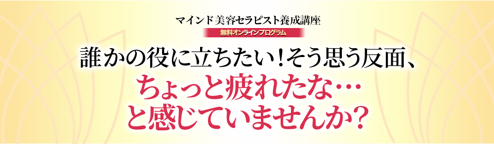
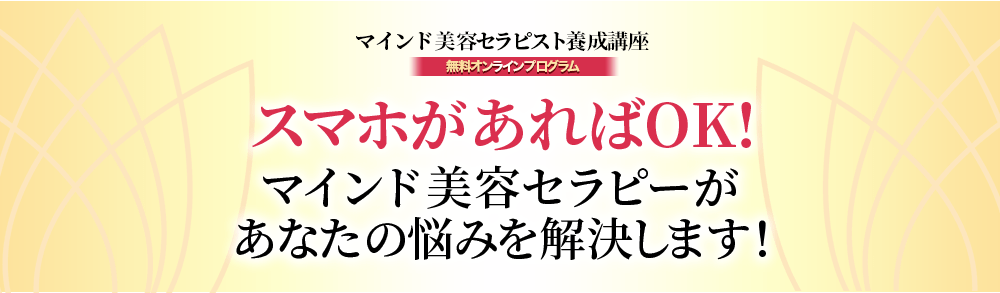
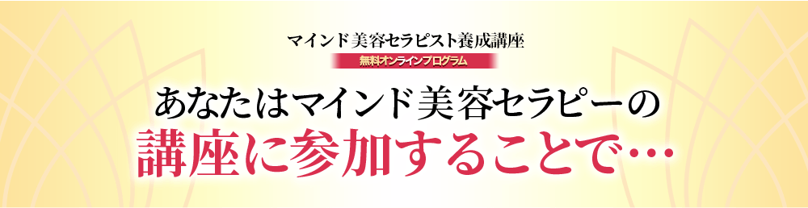
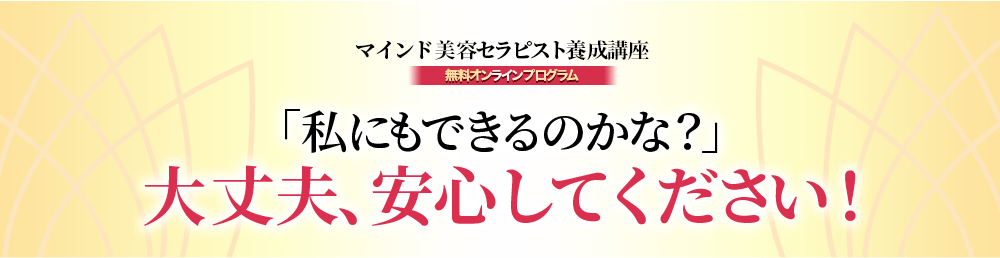
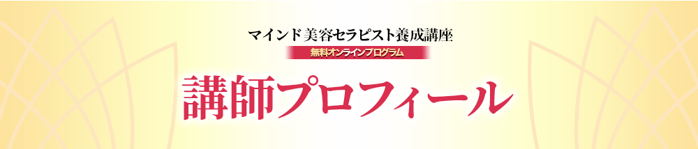
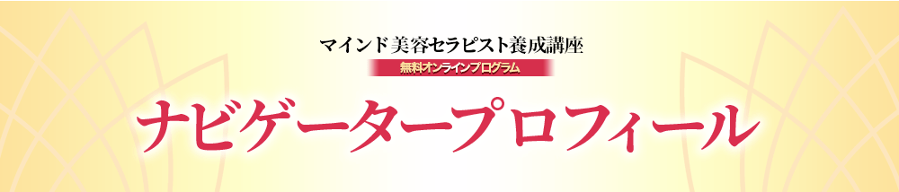

「こんなはずじゃなかったのに」
「どうしてうまくいかないんだろう」
「人生なんて思い通りにいかないのが当たり前だから」
こんなふうに肩を落として、どこか諦めながら生きていませんか？
特に日本人は自己表現をするのが苦手です。
周りの顔色を見ながら、つい自分の本音を押し込めているうちに、
本当の声がわからなくなる…
あなたはどうでしょうか？
良かれと思ってやたことが裏目に出たり、役立たずだと自分を思い込んでいませんか？
今日、このページにたどり着いたあなたはラッキーです。
もし、自分次第で人生の結果を変えることができるとしたら、あなたはどうしますか？
アラジンの魔法のランプのように、こするだけで望んだことが次々と目の前に現れたら？
そんな嘘のような本当の話がここにあります。
ぜひこのまま読み進めてくださいね。

こんにちは、日本マインド美容協会代表の渡部さやかです。
銀座で潜在意識を活用してキレイと豊かさを引き出す
セラピー・セッションをしています。
まず、なぜこのマインド美容セラピーをやっているのか、
私は元々広島でエステの仕事をしていました。
その時に「自分が好きになれない」「自分に自信をモテない」という
数多くの女性に出会い、もどかしい想いを抱えていました。
また、「頑張らなきゃいけない」と無理を続け、
本来の自分を見失い「パニック障害」になってしまいました。
「もう早くなんでもいいから本来の自分に戻りたい！」
そう思った時に出会ったのが、筋反射、キネシオロジーです。
「こんな生き方をしていたから、こんな病気になっていたんだ」
心の声を知ることで、たった1回のセッションで完治しました。
この身を持って体感した経験から
「私もたくさんの人を助けられたらいいな」
「自分のように辛い体験をしている人、
悩みや問題を解決したいと思って色々探している人の力になりたい」
そう思って生み出したのがこの「マインド美容セラピー」です。
マインドセラピーとは
身体を通じて心の通訳ができるようになるセラピーです。
たったのそれだけで
幸せな小顔にもなれますし、幸せな引き寄せも叶います。
自分の本当の気持ちがわからない、やりたいことがわからない、、
とお悩みの方は多いですが、このマインド美容セラピーではからの反応から
心の声を聴くので、“本音”、つまり潜在意識の情報が全部わかります。
本当に望んでいることが分かると、
ちゃんと行くべき未来へ向かって進むことができますよね。
今まであなたが上手くいかなかったのは「心の声が聞けていないから」
ただそれだけなのです。
従来の口頭でのコーチングやカウンセリングですと顕在意識でフタをしてしまうため
自分の心の声・潜在意識にある本音が分かりません。
マインド美容セラピーでは、“あるツール”を使って心の声を聴き出すので、
「本当の望み」が分かるようになり、理想の未来がスルスルと引き寄せられるようになります。
さらに、従来のセラピーと大きく異なる点があります！
エステやセラピーというと「サロン」が必要です。
でもサロンを持つには、お金も要りますし、場所を用意しないと始められません。
開業にはハードルが高いですよね。
でも今は、昔と違って、インターネットが普及したので、
自宅にいながら「お金をかけずに」オンラインで世界中の人と
やりとりができるようになりました。
このマインド美容セラピーは、対面でももちろんできますが、
「オンラインでもできるセラピー」です。
サロンを準備しなくてもスマホやタブレットがあれば、
場所に縛られることもなく、自分の空いている時間を使って
今すぐスタートすることができます。
また、マインド美容セラピストは
今最も求められていると言っても過言ではありません。
今、心のケアが必要とされる時代です。
5人に1人は一生の間に何らかの精神疾患にかかると、
国際共同研究などでも発表されています。
それに人生100年時代。
キレイに歳を重ねたいですよね。
顔には、内面の状態がそのまま映し出されます。
マインド美容セラピーは
内面も外見も磨くことができます。

このようなことを手に入れられるでしょう。

長年の実績とスキルから得た経験からあなたが本来の姿で輝く道筋、
そして令和時代の新しい働き方とあなたの次のステージを
しっかりお伝えさせていただきます。
また、これまでのセラピーでの実績や受講生のご感想を
一部ですがご紹介させて頂きます。
カラーセラピーやブロック解除をしていましたが、お客様が納得しているか分からず、
自己満足なんじゃないか？と悩んでいました。また、売上も伸び悩んでいました。
そんな時に出会ったのがマインド美容セラピーです。
それまでは自分自身のことが正直よく分かっておらず、
人間関係も上手くいってなかったのですが、学んでから大変化しました。
視野が広がり、器が大きくなったように思います。
許せることが増え、生きやすくなりました。
今は300名以上の方にセッションを行い、売上も大きく伸びました。
自分の軸がしっかりできたことで、自身もできました。
通ってくださるお客様が表情も含めどんどん変わっていくのが本当に嬉しいです。
多くの方にこのセラピーを届けたいです。
（個人の見解で、効果を保証するものではありません。）
自分が思っていることや考えていることが「これでいいのかな？」といつも不安でした。
マインド美容セラピーに出会って、
自分が何を本当に感じているかをしれたことで決断が早くなりました。
自分との対話がしっかりできるようになり、確信が持てたり不安がなくなったことも大きいです。
また大々的に告知をせずとも口コミだけでセッションに120名来ていただきました。
私のように一歩前に踏み出したい人、もっともっと幸せになりたい人、
人の役に立ちたい人にマインド美容セラピーはオススメです。
（個人の見解で、効果を保証するものではありません。）
家族関係が上手くいかず悩んでいました。
自分のことに毎日が精一杯で、セラピストになりたいとは思っていなかったのですが、
「マインド美容セラピー」にとても惹かれ、さやか先生に会いに行きました。
講座受講後、継続セッション7件契約し、
体験会をして欲しいとイベントやサロンに呼ばれるようになりました。
100人以上のお客様が口コミで来てくれるようになり、
会社員をやりながら週1、2で起業しています。
マインド美容セラピーを学んで一番思い出深いエピソードは愛猫のことです。
腎臓病で痙攣、獣医から今日でもうもたない、と言われ家に連れて帰りました。
少しでも癒しに、と思ってセラピーをしたら、復活して飛び回れるほど元気になり、
それから2年一緒に過ごすことができました。
愛猫がこのセラピーの可能性を教えてくれ、家族も一つになれました。
自分軸がブレることもなくなり、毎日幸せです。
（個人の見解で、効果を保証するものではありません。）
人が好きで、誰かの役に立ちたい・・・
セラピーが好きで、これまで悩んだ人生を誰かのために役立てたい・・・
そんな願いを叶えて、
マインド美容セラピストを職業にしてみませんか。
など、あなたの目で確かめてくださいね！
無料オンラインプログラムでお会いしましょう！

広島生まれ。19歳で結婚して、出産。
エステサロン勤務を経て、自宅でサロンを開業。
パニック障害に陥るも、
心理学、脳科学、キネシオロジーを学ぶことで自らの人生を阻んでいた
あらゆるトラブルを克服。
心と身体を味方にすることで人生は切り拓けることを確信し、
口コミだけで5000人以上の方の心の通訳をして奇跡と感動を起こし
ハートとボディのセラピーをテーマにしたメンタルと美容を体系化。
東京銀座に日本マインド美容協会を設立し、
インストラクターと共にキレイと豊かさを心で育むよう
全国で輪を広げている。

一人起業家の限界を突破しステージ拡大へと導くプロフェッショナルナビゲーター。
三姉妹を女手一つで育てるために起業した母が楽しそうに働く姿に憧れ、
卒業後、自然化粧品の販売代理店資格を取得し起業。
現職に事業転換するまで20年間連続し、毎年営業成績優秀者として表彰される。
時に年間セミナー動員数最多を記録するなど実績が評価され、
女性初となるセミナー講師に抜擢され活躍。
心と体を味方にすることで人生は切り拓けることを確信し、
その経験を活かし、「業界の第一人者・その道のプロフェッショナルとして」
また「弟子の育成・右腕を探している」そんな、次の拡大ステージに向けてギアを入れよう
としている女性起業家・著者に対し、価値観を尊重したプロデュースを行い、
集客・商品構築・販売までをトータルサポート。
この4年間でナビゲーターとして関わったプロモーションの売上累計は9億円を超える。
起業後6000名以上の女性の人生に触れる中で、経済力の無さやマインドが、
子供や社会に大きく影響することを痛感。両親・自身の離婚、子育てや介護等の経験からも
「女性自ら稼げる力」の必要性を思い、ぜんざいは「人を豊かにするコンテンツ」
を持つ先生のサポートを通し、「可能性に挑め！」という理念のもと、
自立したい女性の支援に尽力。